Unsupervised Learning, Clustering,
& Customer Segmentation Case Study
Python, Pandas, NumPy, Scikit-Learn
Matplotlib, Seaborn, Yellowbrick, SciPy
EDA, PCA, K-Means, Cluster Profiling
2,240 customers
29 features
Customer Personality Segmentation
This is a case study/project I conducted through MIT and the MIT Institute for Data, Systems, and Society (MIT IDSS) machine learning and data science program. This study utilizes machine learning, unsupervised learning, and clustering to group customers by income and spending patterns, creating customer segments to support targeted marketing and campaign strategies.
Customer Personality Segmentation
A machine learning case study using K-Means clustering to identify distinct customer groups based on demographics, personality traits, and spending behavior.
Business Context
Understanding customer personality and behavior is pivotal for businesses to enhance satisfaction and increase revenue. Segmentation based on a customer's personality, demographics, and purchasing behavior allows companies to create tailored marketing campaigns, improve retention, and optimize product offerings.
A leading retail company with a rapidly growing customer base seeks deeper insights into their customers' profiles. By understanding personalities, lifestyles, and purchasing habits, the company can personalize marketing, strengthen loyalty programs, and address challenges such as improving campaign effectiveness, identifying high-value customer groups, and fostering long-term relationships.
With competition increasing, shifting from generic strategies to targeted approaches is essential for sustaining advantage.
Objective
To optimize marketing efficiency and enhance customer experience, the company aims to identify distinct customer segments. Understanding the characteristics and behaviors of each group enables the company to:
- Develop personalized marketing campaigns to increase conversions.
- Create retention strategies for high-value customers.
- Optimize resource allocation, such as inventory and pricing.
As the data scientist, my role was to analyze the customer dataset, apply clustering techniques, and provide actionable insights for each segment.
Data Dictionary
The dataset includes 2,240 customers and 64,960 individual data points.
Customer Information
- ID: Unique identifier.
- Year_Birth: Birth year.
- Education: Education level.
- Marital_Status: Marital status.
- Income: Yearly household income (USD).
- Kidhome: Number of children.
- Teenhome: Number of teenagers.
- Dt_Customer: Enrollment date.
- Recency: Days since last purchase.
- Complain: Complaint in last 2 years (0/1).
Spending Information (Last 2 Years)
- MntWines
- MntFruits
- MntMeatProducts
- MntFishProducts
- MntSweetProducts
- MntGoldProds
Purchase and Campaign Interaction
- NumDealsPurchases
- AcceptedCmp1
- AcceptedCmp2
- AcceptedCmp3
- AcceptedCmp4
- AcceptedCmp5
- Response
Shopping Behavior
- NumWebPurchases
- NumCatalogPurchases
- NumStorePurchases
- NumWebVisitsMonth
Libraries
# Libraries to help with reading and manipulating data
import pandas as pd
import numpy as np
# libaries to help with data visualization
import matplotlib.pyplot as plt
import seaborn as sns
# Removes the limit for the number of displayed columns
pd.set_option("display.max_columns", None)
# Sets the limit for the number of displayed rows
pd.set_option("display.max_rows", 200)
# to scale the data using z-score
from sklearn.preprocessing import StandardScaler
# to compute distances
from scipy.spatial.distance import cdist, pdist
# to perform k-means clustering and compute silhouette scores
from sklearn.cluster import KMeans
from sklearn.metrics import silhouette_score
# to visualize the elbow curve and silhouette scores
from yellowbrick.cluster import KElbowVisualizer, SilhouetteVisualizer
# to suppress warnings
import warnings
warnings.filterwarnings("ignore")
Data Overview/Cleaning
In order to begin analyzing the data, I first had to prepare the data and identify any faults.
Task: Identify the data types.data.dtypesObservations: The data types observed across the columns are Int64, object, and float64
Task: Analyze the statistical summaries of the dataset and determine the average household income.
data.describe()Summary Statistics
The average household income annually is approximately 52k
Objective
Determine if there are any missing values in the data, If yes, treat them using an appropriate method.
data.isnull().sum()
# isnull shows income has 24 places where data is missing
data = data.dropna(subset=["Income"])
#data.dropna specifys which column to drop the missing data
data.isnull().sum()
#repear code of isnull now shows income at 0 missing data points| Feature | Missing_Values |
|---|---|
| Income | 24 |
The data before cleaning, showing 24 missing values.
| Feature | Missing_Values |
|---|---|
| Income | 0 |
The data after cleaning showing 0 missing values.
After Removing the 24 missing values I ensured that the dataset is complete and mathematically usable, since machine learning algorithms cannot operate on null inputs. This also improved the reliability of the clustering results by preventing inaccurate calculations.
Duplicate Check
Determine if there are any duplicates in the data.
data.duplicated().sum()| Duplicates_Found |
|---|
| 0 |
The executed code returned 0, indicating no duplicated records in the dataset.
Exploratory Data Analysis
Univariate Analysis
I explored all of the variables and provided observations on their distributions (histograms and boxplots).
Histograms of Key Numerical Features
# Pull out the numerical columns we want to look at
features = [
"Income",
"Recency",
"MntWines",
"MntMeatProducts",
"MntSweetProducts",
"NumWebPurchases",
"NumStorePurchases",
"NumCatalogPurchases"
]
# Set up a 3x3 grid for the plots so everything fits on one figure
fig, axes = plt.subplots(3, 3, figsize=(14, 10))
axes = axes.flatten() # makes the grid easier to loop through
# Loop through each feature and draw a histogram for it
for i, col in enumerate(features):
sns.histplot(data[col], bins=30, kde=True, ax=axes[i])
axes[i].set_title(col, fontsize=12) # title = feature name
axes[i].set_xlabel(col, fontsize=10) # x-axis shows actual values
axes[i].set_ylabel("Frequency", fontsize=10) # y-axis = how many customers fall in each bin
# Remove any empty subplot boxes if we don't use all 9 grid positions
for j in range(len(features), 9):
fig.delaxes(axes[j])
# Layout clean-up so titles and labels don’t overlap
plt.suptitle("Histograms of Key Numerical Features", y=1.02, fontsize=16)
plt.tight_layout()
plt.show()
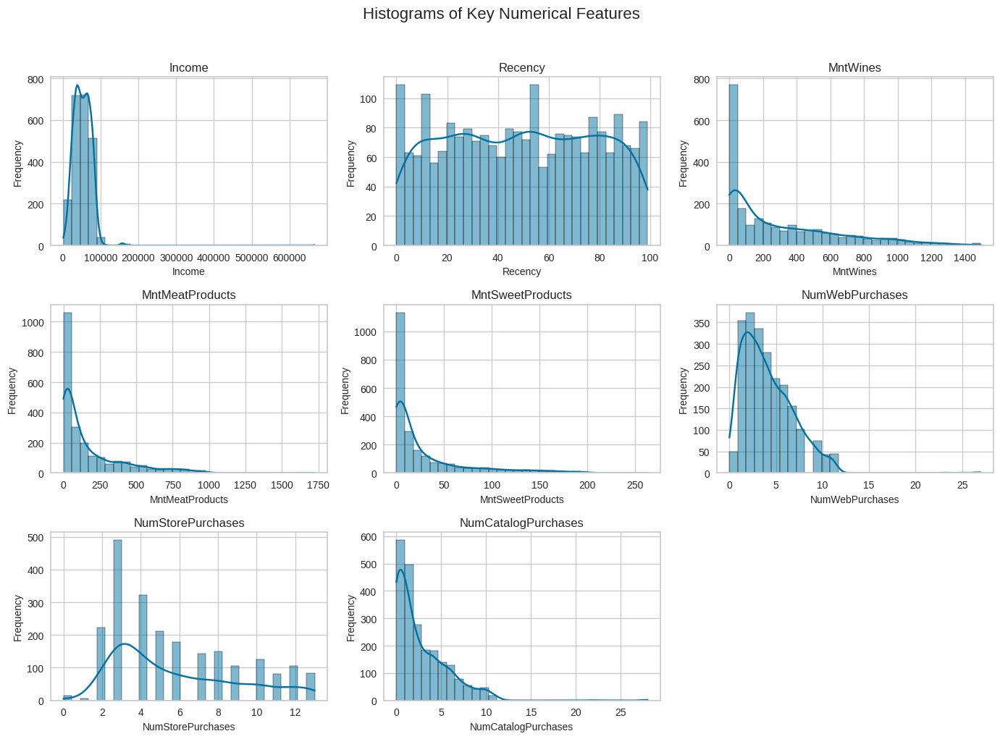
In each histogram, the x-axis represents the actual values of the feature being analyzed (e.g., number of catalog purchases), while the y-axis shows how many customers fall into each value range.
Observations: The histograms confirm that spending variables such as MntWines, MntMeatProducts, and MntSweetProducts share similar skewed distributions that show positive relationships. Web, store, and catalog purchase counts show overlapping ranges and clustering toward lower values, reflecting mild positive correlations among the purchase-frequency features. In contrast, Income and Recency do not exhibit clear distribution patterns that strongly align with the other variables, reinforcing that they have weak or negligible linear relationships compared to the spending and purchase-behavior features.
Boxplots of Key Numerical Features
# Same set of features as the histogram section
features = [
"Income",
"Recency",
"MntWines",
"MntMeatProducts",
"MntSweetProducts",
"NumWebPurchases",
"NumStorePurchases",
"NumCatalogPurchases"
]
# Create a 3x3 grid for the boxplots
fig, axes = plt.subplots(3, 3, figsize=(14, 10))
axes = axes.flatten()
# Loop through each feature and draw a boxplot
for i, col in enumerate(features):
sns.boxplot(data=data, x=col, ax=axes[i])
axes[i].set_title(col, fontsize=12) # feature name at the top
axes[i].set_xlabel(col, fontsize=10) # x-axis shows the range of values
axes[i].set_yticks([]) # remove y-axis ticks
# Remove any leftover empty subplot spaces
for j in range(len(features), 9):
fig.delaxes(axes[j])
# Keep things from overlapping and add a main title
plt.suptitle("Boxplots of Key Numerical Features", y=1.02, fontsize=16)
plt.tight_layout()
plt.show()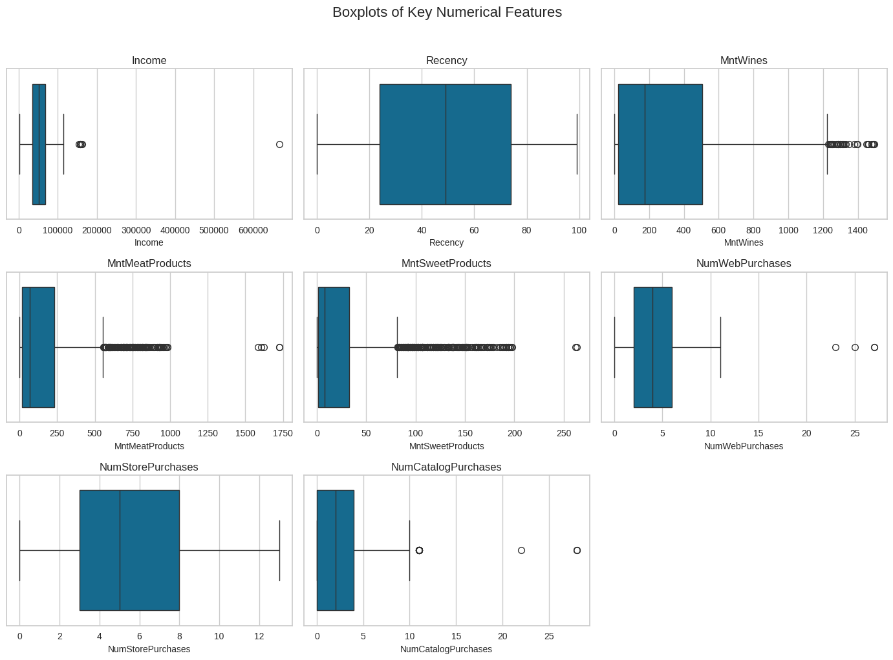
Bivariate Analysis
I Performed a multivariate analysis to explore the relationships between the variables.
numeric_data = data.select_dtypes(include=["int64", "float64"])
plt.figure(figsize=(22,18)) # bigger figure for readability
sns.heatmap(numeric_data.corr(),
annot=True,
cmap="coolwarm",
linewidths=0.5)
plt.title("Correlation Heatmap", fontsize=20)
plt.xticks(rotation=45, ha='right')
plt.yticks(rotation=0)
plt.show()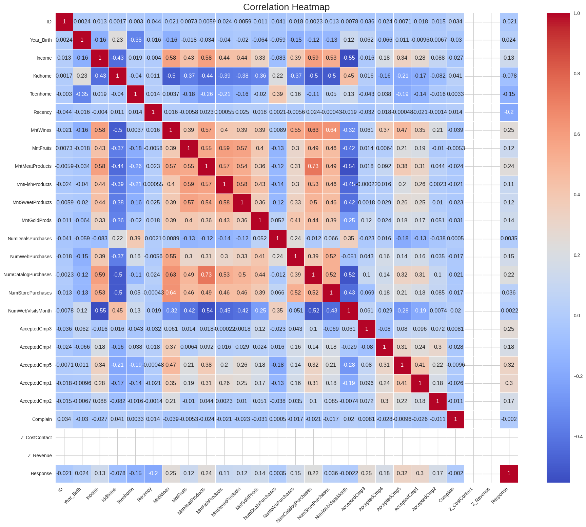
Observations: The map data shows that High-spending customers cluster in top-right areas, income vs spending is positive, and spending variables rise together. There are also other relationships like catalog purchases and store purchases. If spending on one area is high it is high for the other areas aswell again suggesting a high spending customer segment.
Additional Bivariate Analysis
Income vs Total Spending
spending_cols = ["MntWines", "MntMeatProducts", "MntFishProducts",
"MntSweetProducts", "MntGoldProds"]
plt.figure(figsize=(10,6))
sns.scatterplot(x=data["Income"], y=data[spending_cols].sum(axis=1))
plt.title("Income vs Total Spending")
plt.xlabel("Income")
plt.ylabel("Total Spending (2-year total)")
plt.show()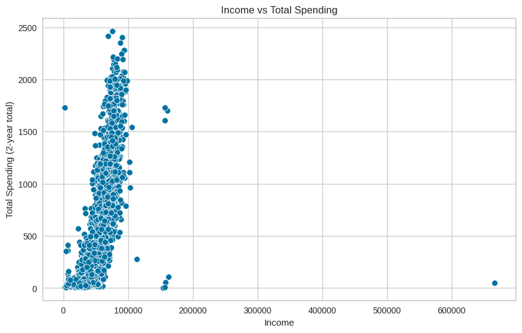
Observations: This plot showing a relationship of income level vs all spent suggests that higher-income customers tend to spend more, but there is still variation, and not all high-income customers spend a lot.
Web Visits vs Web Purchases
plt.figure(figsize=(8,6))
sns.scatterplot(x=data["NumWebVisitsMonth"], y=data["NumWebPurchases"])
plt.title("Web Visits vs Web Purchases")
plt.xlabel("Monthly Web Visits")
plt.ylabel("Web Purchases")
plt.show()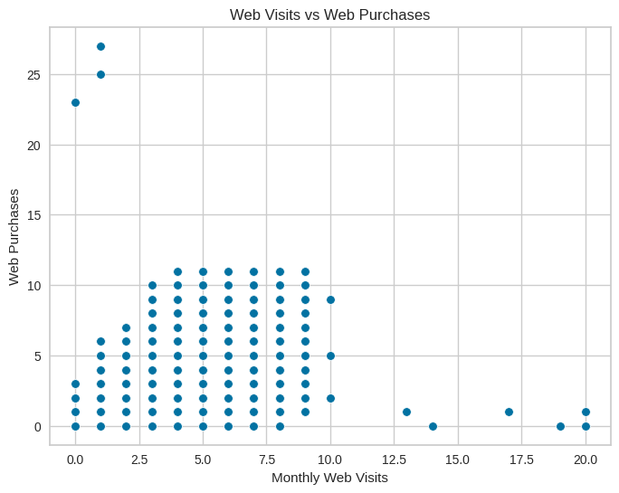
Observations: This plot shows a relationship between monthly web visits and web purchases, and suggests a clear positive relationship, where more web visits are associated with more web purchases and indicate online engagement behavior.
Correlation Among Spending Categories
spending_cols = ["MntWines", "MntMeatProducts", "MntFishProducts",
"MntSweetProducts", "MntGoldProds"]
plt.figure(figsize=(12,6))
sns.heatmap(data[spending_cols].corr(), annot=True, cmap="Blues")
plt.title("Correlation Among Spending Categories")
plt.show()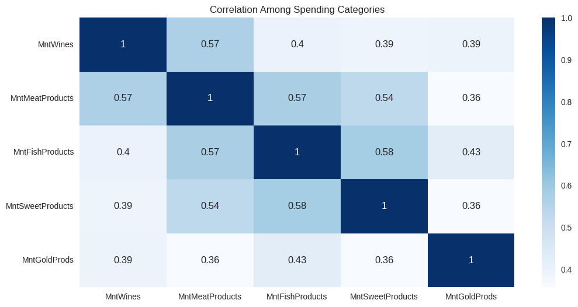
Observations: In this map Wine, Meat, Fish, Sweets, and Gold spending all move together. This forms the "premium customer" behavior profile that indicates the consumers who spend a lot on one category tend to spend a lot on others as well.
Turning Data Into an Interactive Experience
K-means Clustering
I used the K-means algorithim to cluster the data, and started by preparing the data to determine K, the appropriate amount of clusters.
Data Preparation for K-Means Clustering
Step 1: Convert Dates and Create Age Feature
# Convert the customer date column to a proper datetime format
data["Dt_Customer"] = pd.to_datetime(data["Dt_Customer"], dayfirst=True)
# Make a new age column using the birth year
data["Age"] = 2025 - data["Year_Birth"]This step cleans up the customer date field and engineers a new Age feature from the birth year. Using age instead of raw birth year makes the feature easier to interpret and more meaningful for clustering, since age directly reflects where customers are in their life stage.
Step 2: Remove Columns Not Needed for Clustering
# Remove columns we don’t need for clustering
data = data.drop(columns=["ID", "Year_Birth", "Dt_Customer", "Z_CostContact", "Z_Revenue"])Here, identifier and constant-like fields are removed so they do not influence the clustering. Dropping IDs and non-informative variables keeps the model focused on features that actually describe customer behavior and reduces noise in the feature space.
Step 3: Encode Categorical Variables
# Turn all of the remaining string columns into numeric dummy variables
cat_cols = data.select_dtypes(include="object").columns
data_encoded = pd.get_dummies(data, columns=cat_cols, drop_first=True)Categorical fields are converted into numeric dummy variables so they can be used by K-Means, which only works with numeric inputs. Using one-hot encoding (with the first category dropped) preserves the information in each category while avoiding redundancy.
Step 4: Select Numeric Columns for the Model
# Keep only the numeric columns for the model
numeric_cols = data_encoded.select_dtypes(include=["int64", "float64", "uint8"]).columnsAfter encoding, this step filters down to the numeric columns that will go into the clustering model. It ensures that only valid, model-ready features are passed forward, keeping the pipeline clean and explicit.
Step 5: Scale Features for K-Means
# Scale the numeric data so the clustering algorithm treats all features equally
from sklearn.preprocessing import StandardScaler
scaler = StandardScaler()
X = scaler.fit_transform(data_encoded[numeric_cols])
Finally, all numeric features are standardized so they are on a comparable scale. This is critical for K-Means, which is distance-based: without scaling, features with larger numeric ranges would dominate the distance calculations and bias the cluster assignments.
Step 6: Test for K using the Elbow method
## Using the elbow method to determine the optimal number of clusters
# List to store the inertia (within-cluster sum of squares)
inertia = []
# Range of possible cluster numbers to test (k = 2 through 10)
K_range = range(2, 11)
for k in K_range:
# Create a KMeans model for this value of k
km = KMeans(n_clusters=k, random_state=42)
# Fit the model and store the inertia score
km.fit(X)
inertia.append(km.inertia_)
# Plot the inertia values to visualize the "elbow"
plt.plot(K_range, inertia, marker='o')
plt.xlabel('Number of clusters (k)')
plt.ylabel('Inertia (Within-Cluster Sum of Squares)')
plt.title('Elbow Method for Determining Optimal k')
plt.show()
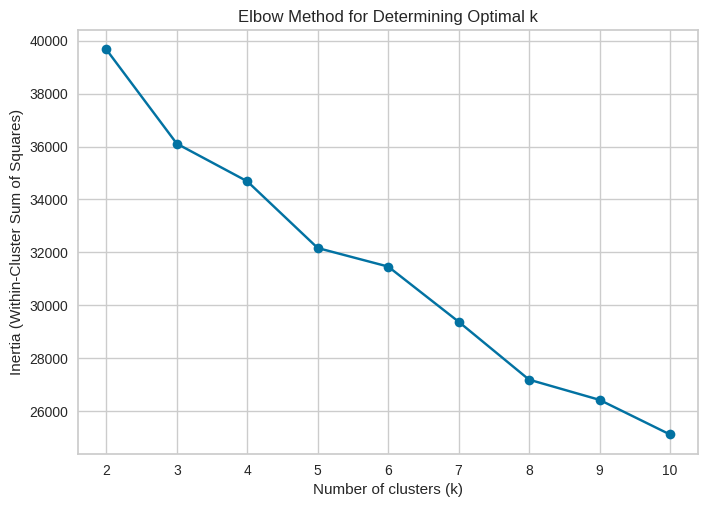
Observations: In our results, the elbow clearly appears at four clusters, meaning: Increasing from 2 → 3 → 4 clusters improves the model significantly. Adding more clusters beyond 4 gives only small, diminishing benefits. Four clusters capture the natural structure in the customer base without over-complicating the segmentation. This method ensures that our segmentation is data-driven, justified, and optimized for real business insights.
Step 7: Finalize the number of clusters using the Silhouette Score
# Silhouette scores for different numbers of clusters
sil_scores = []
for k in range(2, 11):
km = KMeans(n_clusters=k, random_state=42)
labels = km.fit_predict(X)
# check how well the clusters are separated at this k
score = silhouette_score(X, labels)
sil_scores.append(score)
print(f"k = {k}, silhouette score = {score:.4f}")
# plot the silhouette curve
plt.figure(figsize=(8,5))
plt.plot(range(2, 11), sil_scores, marker='o')
plt.xlabel("Number of clusters")
plt.ylabel("Silhouette score")
plt.title("Silhouette scores")
plt.show()
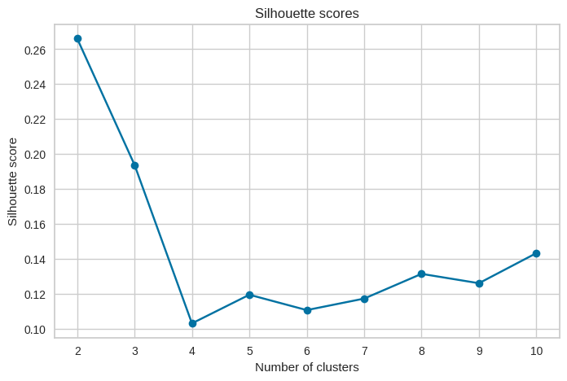
Observations: The silhouette scores peaked at k = 2, meaning four clusters give the best separation in the data. Beyond the point of 4 the scores drop, which suggests that adding more clusters does not improve the structure and only creates weaker groupings.
Final Model Fit and Timing
I did a final fit with the appropriate number of clusters by testing how much total time it took for the model to fit the data.
import time
# number of clusters decided
k_final = 4
start = time.time()
km_final = KMeans(n_clusters=k_final, random_state=42)
km_final.fit(X)
end = time.time()
print(f"Final model fit time: {end - start:.4f} seconds")
# Final model fit time: 0.0097 seconds
This runs the final K-Means model with the chosen value of k = 4 and measured how long it took to fit on the prepared feature set. Timing the fit gives a quick check on how computationally demanding the clustering process is and helps confirm that the chosen configuration is practical for repeated use or scaling.
Observations: The dataset is small and easy for K-Means to process at 0.0097 seconds, and the chosen number of clusters isn’t computationally heavy. The model can be trained quickly and efficiently without needing extra optimization or resources.
Extra: PCA Visualization of Final K-Means Clusters
# Run PCA to reduce the scaled data into 2 principal components
pca = PCA(n_components=2)
X_pca = pca.fit_transform(X)
# Print explained variance for the first two components
print("Explained variance ratio:", pca.explained_variance_ratio_)
# Make a 2D scatterplot of the PCA results colored by cluster
plt.figure(figsize=(8,6))
plt.scatter(X_pca[:,0], X_pca[:,1], c=km_final.labels_, cmap='viridis', s=40)
plt.xlabel("Principal Component 1")
plt.ylabel("Principal Component 2")
plt.title("PCA Projection of Final K-Means Clusters")
plt.show()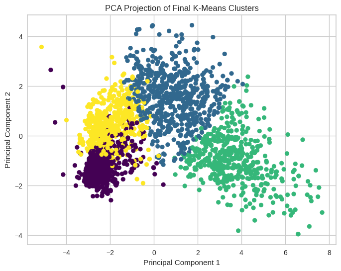
PCA was applied to reduce the high-dimensional dataset into two principal components for visualization. The resulting 2D projection shows clear separation between the four clusters, supporting the earlier conclusion that k = 4 is the most meaningful and interpretable segmentation.
Cluster Profiling and Comparison
Task: Perform cluster profiling using boxplots for the K-Means algorithm. Analyze key characteristics of each cluster and provide detailed observations.
# Columns to profile (spending + income + age)
profile_cols = [
"Income", "Age",
"MntWines", "MntMeatProducts", "MntFishProducts",
"MntSweetProducts", "MntGoldProds",
"NumWebPurchases", "NumCatalogPurchases", "NumStorePurchases"
]
import matplotlib.pyplot as plt
import seaborn as sns
# Grid of subplots (3 rows x 4 columns = 12 slots for 10 variables)
rows, cols = 3, 4
fig, axes = plt.subplots(rows, cols, figsize=(18, 10))
axes = axes.flatten()
# Draw one boxplot per feature in the grid
for i, col in enumerate(profile_cols):
ax = axes[i]
sns.boxplot(x="Cluster", y=col, data=data_encoded, ax=ax)
ax.set_title(f"{col} by Cluster", fontsize=11)
ax.set_xlabel("Cluster", fontsize=9)
ax.set_ylabel(col, fontsize=9)
# Turn off any unused subplot axes (since we have 10 vars but 12 slots)
for j in range(len(profile_cols), len(axes)):
fig.delaxes(axes[j])
plt.suptitle("Cluster Profiles: Income, Age, Spending, and Purchase Behavior", y=1.02, fontsize=14)
plt.tight_layout()
plt.show()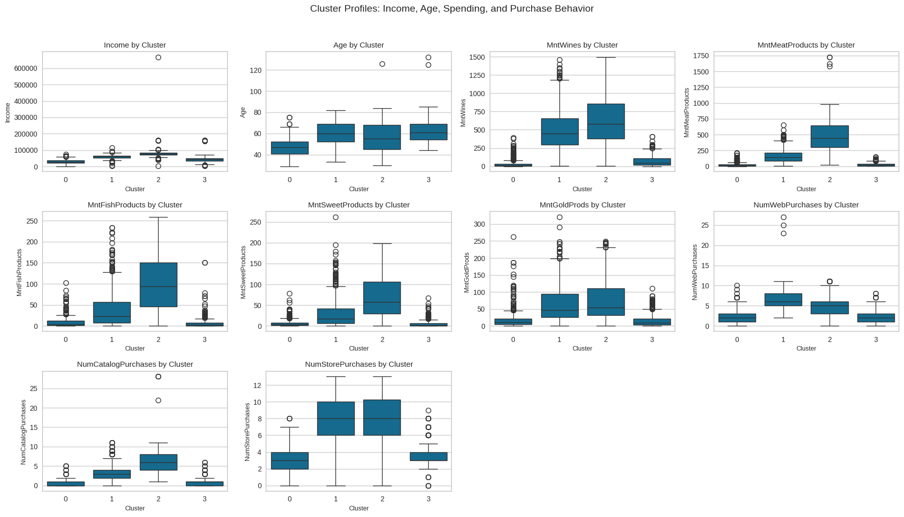
Observations: The clusters show four distinct customer groups. Cluster 0 (Budget Shoppers) has the lowest income and spending across all categories. Cluster 3 (Moderate Family Spenders) shows average income and steady but modest purchasing. Cluster 1 (Affluent Food Enthusiasts) has higher income and strong spending on premium food items. Cluster 2 (High-Value Heavy Spenders) leads in both income and total spending, showing the highest engagement across channels. Together, these groups form a clear progression from low spenders to top-value customers.
Cluster Profiling Using Barplots
Task: Perform cluster profiling on the data using a barplot for the K-Means algorithm. Provide insights and key observations for each cluster based on the visual analysis.
# Barplot cluster profiling
profile_cols = [
"Income", "Age",
"MntWines", "MntMeatProducts", "MntFishProducts",
"MntSweetProducts", "MntGoldProds",
"NumWebPurchases", "NumCatalogPurchases", "NumStorePurchases"
]
# Compute average values per cluster
cluster_means = data_encoded.groupby("Cluster")[profile_cols].mean()
import matplotlib.pyplot as plt
import seaborn as sns
# Create a 3x4 grid for the 10 barplots
rows, cols = 3, 4
fig, axes = plt.subplots(rows, cols, figsize=(18, 10))
axes = axes.flatten()
# Loop through each feature and plot its cluster means
for i, col in enumerate(profile_cols):
ax = axes[i]
sns.barplot(x=cluster_means.index, y=cluster_means[col], ax=ax)
ax.set_title(f"{col} by Cluster", fontsize=11)
ax.set_xlabel("Cluster", fontsize=9)
ax.set_ylabel(col, fontsize=9)
# Disable any empty leftover subplots
for j in range(len(profile_cols), len(axes)):
fig.delaxes(axes[j])
plt.suptitle(
"Cluster Profiles (Mean Values): Income, Age, Spending, and Purchase Behavior",
y=1.02, fontsize=14
)
plt.tight_layout()
plt.show()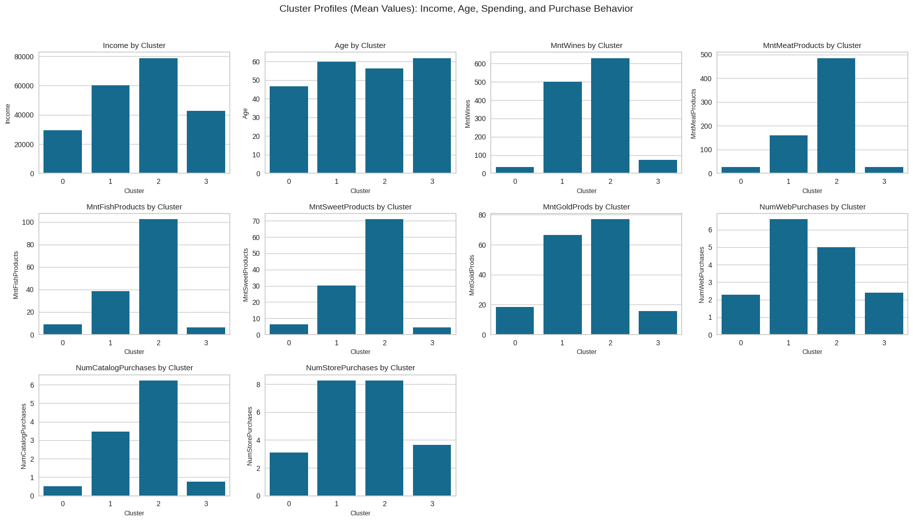
Observations: The barplots show that Clusters 1 and 2 are the most active groups in terms of both store and catalog purchases, while Cluster 0 has the weakest activity and Cluster 3 falls in between. This confirms that the strongest purchasing behavior is concentrated in Clusters 1 and 2, and the cluster labels (0–3) are arbitrary rather than tied to a fixed “type” across runs.
Business Recommendations
Task: Based on the cluster insights, determine what business recommendations can be provided.
The cluster insights highlight several opportunities to improve marketing performance and customer engagement. Customers in Cluster 0 show low purchasing activity, so focusing on basic promotions, introductory discounts, and value-focused messaging can help encourage more frequent shopping. Cluster 3 represents moderate buyers who could be moved upward through targeted product suggestions, loyalty points, and personalized offers based on their shopping patterns. Clusters 1 and 2 are the strongest and most active groups, and they should be prioritized with premium bundles, subscription options, exclusive product drops, and tailored campaigns that reward their higher engagement levels. Strengthening retention efforts for these two clusters will yield the highest return, while nurturing Clusters 0 and 3 with smaller, consistent incentives can gradually increase overall customer value.
Campaign Strategy
Use a tiered campaign approach tailored to each cluster’s behavior. For Clusters 1 and 2, which show the highest purchasing activity, launch premium-focused campaigns such as curated product bundles, early-access offers, and loyalty rewards that emphasize exclusivity and value. For Cluster 3, send personalized recommendations and moderate incentives to encourage more frequent purchases, helping move them toward higher engagement. For Cluster 0, deploy simple awareness and reactivation campaigns using discounts, first-purchase offers, and value messaging to increase basic participation. This targeted structure ensures each cluster receives messaging that matches its spending level and likelihood to convert.